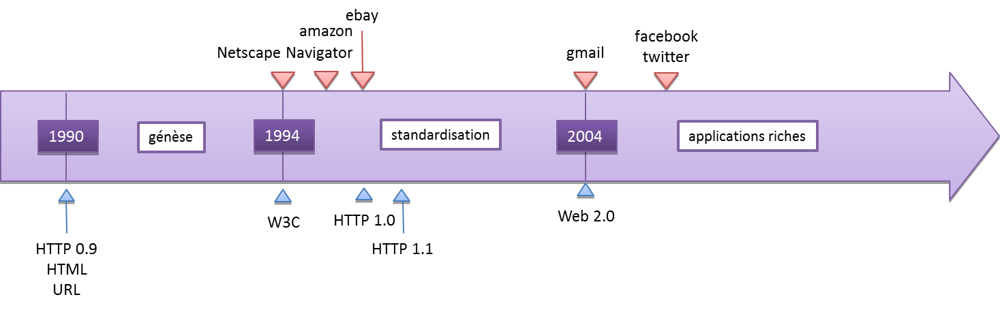
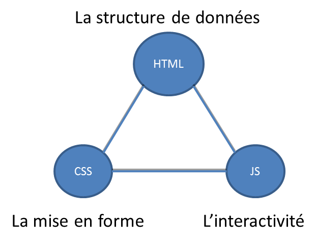
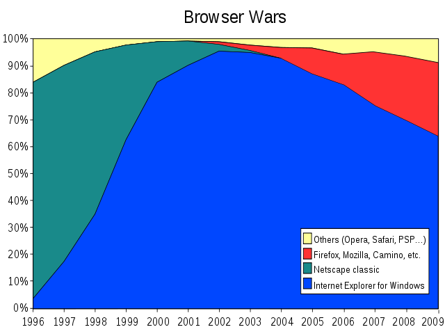
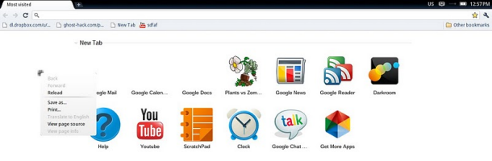

Historique du web
Le web est constitué de 3 technologies complémentaires: les URLs (Uniform Resource Locator), le HTTP (Hypertext Transfer Protocol) et Le HTML (Hypertext Markup Language)
Le HTML est à son tour complété par 2 technologies :
les CSS (Cascading Style Sheets) et le javascript
Le HTML évolue toujours et la version 5, toujours en discussion, commence a être implementée dans tous les browsers modernes.
- 1991 HTML
- 1994 HTML 2
- 1996 CSS 1 + JavaScript
- 1997 HTML 4
- 1998 CSS 2
- 2000 XHTML 1
- 2002 Tableless Web Design
- 2005 AJAX
- 2009 HTML 5
Les 3 éléments de programmation des pages webs sont complémentaires.
Un peu comme pour le pattern MVC, la séparation des rôles est importante.
Chacun de ces 3 langages est adapté à son but.
Le HTML est un language à balise décrivant le contenu d'une page web.
<html> <head> <title>a simple page</title> </head> <body> <p class="salutations">Hello !</p> <ul id="items"> <li>Item 1</li> <li>Item 2</li> <li>Item 3</li> <li>Item 4</li> </ul> </body> </html>
Une synthaxe proche du XML.
Une possibilité de balises pré définie dans la spécification.
http://en.wikipedia.org/wiki/HTML
Séparation de la mise en forme et des données.
p {
font-weight: bold;
height: 25px;
line-height: 25px;
position:relative;
display:block;
overflow:auto;
margin: 0;
padding: 0;
text-align: center;
background-color: #ccc;
font-style: normal;
}
Liste de clés - valeurs : réglage des propriétés visuelles d'un élément HTML.
Une partie des sélecteurs et propriétés supportées
http://fr.wikipedia.org/wiki/Feuilles_de_style_en_cascade
Le javascript est un language de programmation orientée objet par prototype
var myVar = "Hello !";
alert(myVar);
myVar = "";
for (var i = 0; i < 10; i++) {
myVar += i + " ";
}
alert(myVar);
myVar = document.getElementById("jsSample");
alert(myVar.innerHTML);
Dans le contexte d'éxécution d'un navigateur web, il existe certains objet implicites : window, document...
http://t-templier.developpez.com/tutoriel/javascript/javascript-poo1/
Les tables en HTML ont longtemps été utilisées pour la mise en page.
D'un point de vue sémantique, elles auraient du être utilisées uniquement pour des données tabulaires (type feuilles des données)
Mais cela permettait de garantir un design stable en paliant aux larges différences entre les navigateurs.
Le tableless web design fait donc référence à la chute de cette pratique au profit de l'usage de balises plus appropriées et de CSS.
On parle désormais de web sémantique (utiliser un balisage approprié à la nature du contenu) et de design fluide. Le web sémantique cible notamment le référencement naturel et l'accessibilité.
La propriété css display (:table-cell) permet d'obtenir le même comportement que les tableaux tout en conservant un balisage approprié.
http://en.wikipedia.org/wiki/Tableless_web_design
L'expression a été médiatisée en août 2003 par Dale Dougherty de la société O'Reilly Media lors d'une conférence.
Le Web 2.0 facilite l'interaction entre utilisateurs, le crowdsourcing et la création de réseaux sociaux rudimentaires, pouvant servir du contenu et exploitant les effets de réseau, avec ou sans réel rendu visuel et interactif de pages Web.
En ce sens, les sites Web 2.0 agissent plus comme des points de présence, ou portails Web centrés sur l’utilisateur plutôt que sur les sites Web traditionnels. L’évolution des supports permettant de consulter les sites Web, leurs différents formats, amène en 2008 une approche recentrée sur le contenu plus que sur l’aspect.
Les nouveaux gabarits Web 2.0 (en anglais : template) tentent d’apporter un soin graphique, des effets, en restant compatibles avec cette diversité de supports. Dans le Web 2.0, l'internaute devient acteur en alimentant les sites en contenu (exemple : blogs), éventuellement collaborativement avec les wikis, voire des dispositifs très rigoureux de type science citoyenne. (Wikipédia)
En bref, un buzzword.
http://fr.wikipedia.org/wiki/Web_2.0
Malgré le flou de sa définition, le web 2.0 met en avant:
- Des logiciels coté serveur
- les standards de navigation
- Les navigateurs respectant les standards (les plugins, non-standards sont généralement évités)
- HTML / XHTML sémantique
- La séparaton de la mise en forme via CSS
- Les techniques d’applications riches telles qu’AJAX
- La syndication et agrégation de contenu RSS/Atom
- La catégorisation par étiquetage (tags)
- L'utilisation appropriée des URLs
- Les architectures REST ou services web XML
http://fr.wikipedia.org/wiki/Web_2.0
Ajax est une combinaison de technologies telles que javascript, CSS, XML, DOM et XMLHttpRequest dans le but de réaliser des applications Web qui offrent une maniabilité et un confort d'utilisation supérieur à ce qui se faisait jusqu'alors.
En bref, c'est un autre buzzword mais un fond technologique réel :
- Javascript : le coeur du dynamisme d'une page
- XMLHttpRequest : Les requêtes asynchrones afin de récupérer des données après chargement
- XML / JSON : Format d'échange de données
- DOM : Document object model, interprétation du HTML / XHTML manipulatble en javascript
- CSS : Cascading Style Sheets, utilisables en javascript
- L'état : La gestion de l'historique des actions via les ancres et l'historique du navigateur
http://en.wikipedia.org/wiki/Ajax_(programming)
Les technologies présentent dans un navigateur permettent une interaction riche comparable aux applications de bureau.
Malgré les capacités limitées des navigateurs et du javascript, la facilité d'utilisation l'emporte sur les poids lourds du desktop.
Des applications existantes (google map par exemple) et la perspective du html 5 donnent beaucoup de crédit aux applications dans un navigateur.
Les portables nouvelle génération participe à ce mouvement car ils aggrandissent le parc des clients.
Quelques applications RIA :
http://fr.wikipedia.org/wiki/Rich_Internet_Application
L'interaction riche au sein d'une page est aussi possible via les technologies suivantes :
- Flash et Flex (Adobe Systems)
- JavaFX et Applet Java (Sun Microsystems)
- Silverlight (Microsoft)
- XForms, un standard de formulaire proposé par le W3C (non implémenté)
En l'état, et encore plus avec l'arrivée du HTML 5, ces technologies sont en perte de vitesse ou n'ont même pas pris.
http://fr.wikipedia.org/wiki/Asynchronous_JavaScript_and_XML
Le W3C (World Wide Web Consortium) est l'organisation en charge des standards du web
Ses membres (plus de 300) viennent de tous horizons.
Le W3C publie des recommendations que les acteurs du web sont libres de suivre.
La mise en place d'une recommandation est un processus long qui parfois n'aboutit pas.
Après 2000, le W3C avait arrêté ses travaux estimant que le HTML avait atteint sa maturité.
Quelques acteurs ont formés le Web Hypertext Application Technology Working Group (WHATWG) qui a relancé les discussions pour le HTML 5.
En pratique, les navigateurs anticipent les recommandations et commence à implémenter très en amont des publications.
Il est déjà possible de faire du HTML 5 sur les navigateurs modernes.
http://www.w3.org/Consortium/Member/List
La première guerre des browsers a vu mourir Netscape Navigator et triompher internet explorer.
Netscape Navigator est réapparu sous la forme de Firefox via Mozilla Corporation.
http://en.wikipedia.org/wiki/Browser_war
I don't want to wake up in a position one day where the guys at Netscape say,
"Isn't Windows just that little thing that we use to put up menus and draw lines?
Let's just write our own and suck it up into our client."
(Steve Ballmer)
http://en.wikiquote.org/wiki/Steve_Ballmer
Internet explorer est toujours dominant mais Firefox et Chrome gagnent du terrain.
http://gs.statcounter.com
Les portables ont désormais la puissance et le débit permettant de faire fonctionner des navigateurs modernes.
Les vieilles technologies, wap et imode, vont disparaitre car elles ne presentent plus d'intérêt.
Les mobiles (Blackberry, Iphone, Gphone, Windows Phone) supporte le HTML et sont basés sur les mêmes technologies (Webkit, Gecko, Presto).

Chrome os, l'os à venir de Google, ne supportera que des applications en ligne.
